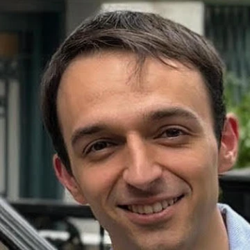

How generative AI, grounded in non-equilibrium thermodynamics, learns how matter behaves from the laws of physics alone
Yuanqi Du
Microsoft Research
Contributed by two MSR interns
Mouyang Cheng
MIT
Denis Blessing
KIT
Co-led with

Carles Domingo-Enrich
Microsoft Research
Why it matters
Molecular simulation is essential to the problems that matter most
Behind each one is the same question: at real-world temperatures, which arrangements do the atoms take, and how likely is each? Molecular simulation is one of the biggest uses of supercomputers: quantum-mechanical calculations of atoms alone take over 30% of all computing time at NERSC, a US national supercomputing centre.
NERSC workload: Camps et al., arXiv:2509.09882 (2025), DFT >30% of yearly cycles · UK national supercomputer ARCHER2: Turner, EPCC (2022), one DFT code (VASP) ~⅓ of all use
The key idea
Grounded in non-equilibrium thermodynamics
“The fact that the water has previously been warmed contributes to its freezing quickly: for so it cools sooner.”Aristotle, Meteorology (c. 350 BC)
Hot water can freeze first: the Mpemba effect
Rediscovered in 1963 by Erasto Mpemba, a Tanzanian schoolboy, and still debated today.
Fast, and still exact
Fast processes lag behind, but tracking the work makes them exact (Jarzynski 1997; Crooks 1999). Neural samplers build on this.
Thermodynamics was born in the Industrial Revolution, for equilibrium. Far from equilibrium, exact laws came only in the 1990s.
Neural samplers: generative AI that learns from physics, not data
Image generators
learned from billions of images
Neural samplers
learned from the forces alone
No data needed
The AI proposes; physics answers with forces.
Every evaluation is reused
Costly physics answers are stored and replayed.
Train once, inference many times
Same model, new temperatures and compositions.
ATLAS · amorphous materials
ATLAS is under review at Science
ATLAS: equilibrium glasses, from the energy alone
One of our oldest high-tech materials
Made for over 4,000 years and in every screen and optical fibre. Metallic glasses (since 1960) are unusually strong and springy. A glass has no repeating pattern, and no database of equilibrated glasses exists to learn from.
“The deepest and most interesting unsolved problem in solid state theory is probably the theory of the nature of glass and the glass transition.”P. W. Anderson, Nobel laureate in physics, Science (1995)
>500×
fewer energy evaluations for the free energy of a glass, accurate to 0.2%
1 model
from hot liquid to cold glass, conditioned on temperature and composition
matches experiment
short-range order in metallic glasses CuZrCrCoNi
Cheng*, Blessing*, …, Domingo-Enrich†, Du†, ATLAS, arXiv:2607.19198 · Klement et al. 1960 · Anderson, Science 1995 · left: real snapshot of a model glass vs. a crystal
ATLAS · foundation model and agentic design
ATLAS is under review at Science
ATLAS: one foundation model, put to work by an AI agent
~300×
less training compute over 480 compositions: pretrain once (36 GPU-hours) instead of ~20 GPU-hours per composition
480
ATLAS queries for an LLM agent to map the best stiffness–ductility trade-offs, choosing up to 5 of 8 elements
Design rule it found found by the agent
CoNiTi in every Pareto-optimal alloy; FeCu tune; MnAl nearly absent
An AI agent can now ask hundreds of what-if questions, and each answer is a full equilibrium ensemble.
Cheng*, Blessing*, …, Domingo-Enrich†, Du†, ATLAS (2026), Fig. 4 · left: schematic of the asynchronous agent loop · candidates are model-guided hypotheses for higher-fidelity validation
JANUS · alloys
JANUS: who sits where, and alloy phase diagrams
JANUS, after the two-faced Roman god: one model, discrete and continuous.
Phase diagram of Cu–Ag
~10³×
fewer energy evaluations, training included: the Cu–Ag miscibility gap and Ni–Cr fcc vs. bcc
Phase diagrams become inference over one model, trained across temperature and chemical potential.
Blessing*, Cheng*, …, Domingo-Enrich†, Du†, JANUS, arXiv:2608.19116, Fig. 3 · left: toy lattice of three elements
JANUS · quantum defects
JANUS: a discovery loop for quantum defects
Why defects
One impurity next to a vacancy in Si or diamond can be a qubit, a quantum sensor or a single-photon source.
The loop
JANUS generates 8,000 equilibrium structures with 15 dopants and vacancies that come and go; we count which pairs and triplets appear more often than random mixing, and check those with quantum chemistry (hybrid DFT).
Known centres re-emerge
Ge–V in diamond · P–V (the E centre) in Si
New candidates new
S–TiGa–[Ga]–P in Si · B–[O]–OFe–V in diamond
A first-principles shortlist for quantum technologies; excited-state calculations and experiments come next.
Blessing*, Cheng*, …, Domingo-Enrich†, Du†, JANUS (2026), Fig. 4 · V = vacancy · left: schematic of the screening loop
The bigger picture
A new era: simulation becomes inference
Train once, inference many times: a new temperature, alloy or design goal is one inference, not a new simulation.
Already trained: an even larger foundation sampler
same recipe, scaled up. Stay tuned.
Future work
Next: OMNIA, universal neural samplers
1 · Liquids2 · Surfaces3 · Batteries
Phase diagrams that include the melt
Where a material melts, and which crystal coexists with the melt below that: the starting point for making it (synthesis).
OMNIAsamples the liquid and the crystals with one model; their free energies give the whole map, melt included.
Hydrogen on Pd, a workhorse catalyst
The H₂ pressure sets how many H atoms sit on the surface and just beneath it, at equilibrium. Those just beneath decide what the catalyst makes.
OMNIAsamples how many H atoms there are, and where, at each pressure.
Na⁺ in the amorphous carbon of a sodium-ion battery
Different amorphous carbons capture different amounts of Na⁺. Where the ions sit is still debated.
OMNIAsamples each carbon at a fixed voltage: how many Na⁺ it holds, and where.
OMNIA, Latin for “all things”: one sampler for every ensemble, from melts to surfaces and electrodes, where atoms come and go.
Future work; schematic animations · Pd catalysts: Teschner et al., Science 2008 · Na⁺ in hard carbon: Stevens & Dahn, J. Electrochem. Soc. 2000
Future work
Next: kinetics, from how likely to how fast
Committor estimation: will it finish, or fall back?
For each arrangement of the atoms, we estimate the chance it goes on to finish the change. From these chances come the rates.
Na⁺ and Cl⁻ find each other among 256 water molecules. The water decides: the distance between the ions alone does not tell whether they will pair.
From HCN to adeninein progress
Five HCN molecules can join into adenine, the A in DNA and RNA (Oró 1960). Mapping the route in water, and how fast it runs, is prebiotic discovery.
Host–guest binding in explicit waterin progress
A small molecule slips into a host's cavity, pushing the water out, and later leaves. How fast it binds and unbinds, not only how tightly, matters for drugs and sensors.
Disease: when folding takes a wrong turn
A protein's working shape is usually its most stable one. In cystic fibrosis, one missing amino acid raises the barrier to it: the protein gets stuck misfolded, and the cell destroys it.
From how likely to how fast: committors turn samples into rates. The processes on the last slide have rates too: crystals forming from a melt, H entering Pd, Na⁺ entering carbon.
NaCl in water: Geissler, Dellago & Chandler, J. Phys. Chem. B 1999 · adenine: Oró, BBRC 1960 · cystic fibrosis: Cheng et al., Cell 1990; Qu, Strickland & Thomas, J. Biol. Chem. 1997 · schematic animations
Back to why it matters
Back to the problems that matter: what we can now explore
Each one becomes one inference with a trained sampler, not a new simulation campaign.
ATLAS (glasses, agentic design) and JANUS (alloys, defects): this talk · OMNIA: future work
Thank you!
1 · Essential, but slow
Molecular simulation underpins batteries, drugs, alloys and quantum technology; classical methods pay for exactness with time.
2 · Out of equilibrium, yet exact
Neural samplers learn from physics alone, drive noise to equilibrium fast, and stay exact by tracking the work along the way.
3 · Foundation samplers are here
ATLAS (glasses; under review at Science) and JANUS (alloys, defects); an even larger model is already trained.